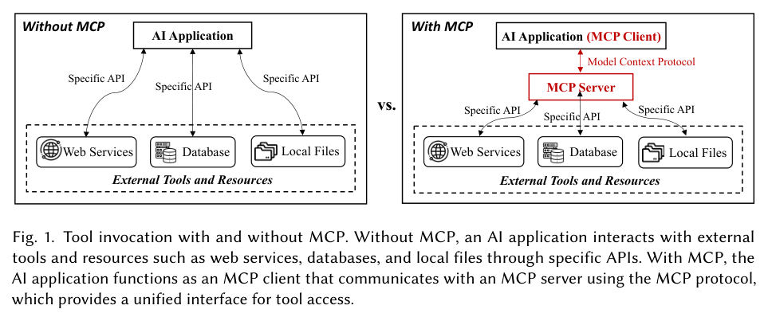
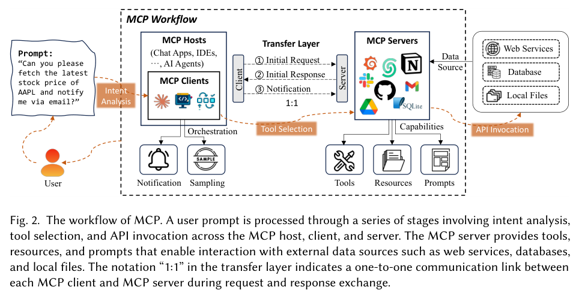
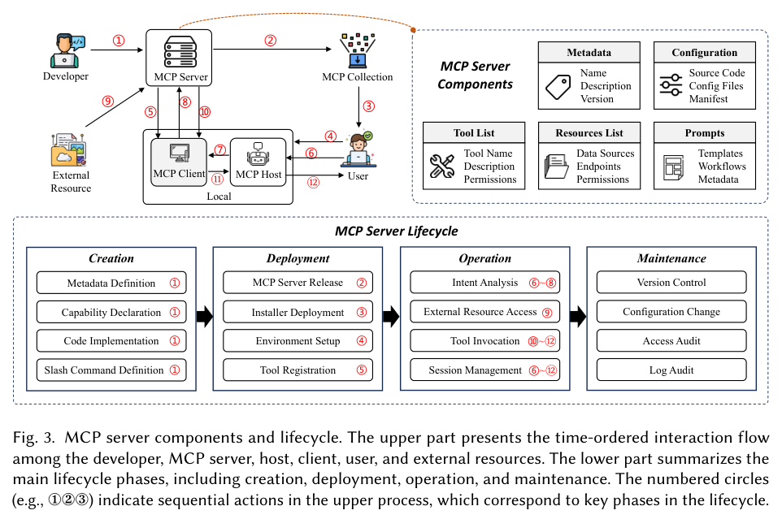
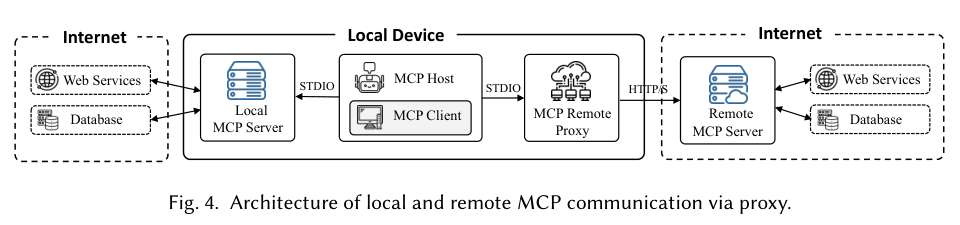

Robotics & autonomous systems (manufacturing cell)
Decision support & optimisation (supply chain)
Chapter 10 summary & Q&A
MCP — overview, abstract & contributions
Background: AI tooling before MCP
MCP architecture: host, client, server
Transport layer & communication
MCP server lifecycle (4 phases, 16 activities)
Current landscape: adopters, community servers, SDKs
Use cases: OpenAI, Cursor, Cloudflare
Security & privacy (preview) & summary
Part A — Common Use Cases and Applications
Agentic systems combine LLMs with goal-directed behaviour and autonomous decision-making: they understand context, formulate plans and act toward objectives while keeping meaningful interaction with humans. LLMs are used not just as language processors but as core reasoning engines for planning and execution. Four domains: creative & artistic, NLP & conversational agents, robotics & autonomous systems, decision support & optimisation.
Evolution: early generative tools produced static outputs from predefined prompts with limited interaction; modern agentic systems actively participate in dynamic, iterative creative processes using context retention, adaptive learning and multi-modal integration — true collaborators that understand artistic intent, refine outputs on feedback and align with the human vision (static generation → interactive, context-aware, adaptive systems).
Music composition — apply music theory, adapt to genres, collaborate in real time with performers/composers.
Writing & narrative development — co-create with authors, maintain character consistency, plot coherence, narrative flow, preserve the author's voice.
Real-world applications
Adobe Firefly agent system — specialised agents: one maintains brand identity/style guidelines, another ensures consistent asset representation across media, a third handles technical specifications and formats.
Universal Music Group AI music production — melody agents (themes/motifs), harmony agents (tonal consistency), orchestration agents (instrumental arrangement) preserving composer's intent.
Use case — Film pre-visualisation
ProblemDirectors and storyboard artists spend a lot of time iterating pre-visualisation sequences, needing constant communication across departments to align creative vision with technical feasibility; traditional tools can't understand creative intent while considering technical constraints. Goal: a multi-agent system translating the director's vision into technically feasible pre-vis sequences while keeping artistic coherence and production constraints.
Agent
Responsibilities
Director agent
Processes natural-language scene descriptions; maintains overall creative vision & style consistency; communicates artistic intent to other agents.
Generates initial storyboards & 3D previews; adapts output from other agents' feedback; maintains visual consistency across scenes.
Collaboration: shared context understanding via LLM capabilities; continuous feedback loops between creative and technical requirements; real-time adaptation to changes.
Environment & external systems: asset management database (3D models, textures, previous storyboards); production management system (budgets, schedules, resources); rendering-farm API (compute for 3D visualisation); camera & equipment database; reference library (past productions, style guides, mood boards); version control system; collaboration platform (real-time team feedback).
Why this is betterCurrent tools operate in isolation needing human intermediaries. Agentic approach gives: continuous alignment of creative vision and technical feasibility; reduced iteration cycles through real-time collaboration; creative consistency while adapting to constraints; efficient resource use via automated technical validation. Agents become creative partners, not mere tools.
2. Natural Language Processing & Conversational Agents
Agentic systems add to language models: maintaining context over long interactions, executing complex tasks through dialogue, adapting to user needs/feedback. Examples: Anthropic's Claude and OpenAI's ChatGPT hold detailed technical discussions across turns, adapting to the user's expertise.
Capability (vs traditional chatbots)
Meaning
Context retention
Coherent discussions across topics/sessions; personalised, relevant responses over time.
Task execution
Translate NL instructions into actionable steps — scheduling, data retrieval, system configuration (bridges communication and execution).
Adaptive interaction
Adjust style, tone, complexity to user preference/expertise/situation.
Multi-modal understanding
Process text, images, code, structured data together.
Real-world:Salesforce Agentforce (formerly Einstein virtual assistant) helps customer-service reps by maintaining context across customer interactions while accessing database information in real time; GitHub Copilot Chat maintains technical discussions about code while executing development tasks.
Use case — Enterprise knowledge management
ProblemKnowledge fragmentation across departments; traditional search/documentation fail to capture context and connections. Goal: multi-agent system to understand, organise and retrieve corporate knowledge, keep context and handle complex queries spanning multiple domains and documents.
Maps relationships between knowledge sources; maintains context across documents; tracks information provenance.
Response synthesis agent
Combines information from multiple sources; adapts detail level to user role; maintains consistency across interactions.
Collaboration: shared understanding of organisational context; continuous learning from user interactions; dynamic adaptation to user roles/needs.
Environment & external systems
Internal systems: document management (SharePoint, Confluence, wikis); communication platforms (Slack, MS Teams); project management (Jira, Asana); email servers (archived threads/attachments); code repositories (GitHub, GitLab docs/discussions); HR systems (training, policy); CRM (customer histories, support tickets).
External APIs/services: industry news (Bloomberg, Reuters); research databases (papers, patents); regulatory databases (compliance, legal); cloud storage (Google Drive, OneDrive); translation services; web monitoring (social media, competitor websites).
Access control layer: role-based access management; security classification database; user authentication; audit logging; compliance monitoring.
Why this is betterTraditional systems use exact keyword matches & predefined categories. Agentic approach: natural-language understanding of complex queries; context-aware retrieval; dynamic connection of related information; role/expertise-personalised responses.
3. Robotics and Autonomous Systems
Traditional robots rely on pre-programmed behaviours and rigid control; LLM-based agents let robots understand natural-language instructions, reason about the environment and adapt dynamically — bridging human intent and physical action.
Key capabilities of modern robotic agents: natural-language understanding for physical tasks; contextual reasoning about environmental constraints; real-time adaptation; learning from demonstration and feedback; multi-modal integration of vision, language and control.
Real-world:Boston Dynamics (Atlas) — language instruction translated to complex physical movement; UC Berkeley robotic systems — generative models adapt in real time to cluttered environments; MIT RoboBrain — creative solving of manipulation tasks using vast knowledge bases.
Use case — Flexible manufacturing cell
ProblemTraditional cells struggle with product variation and unexpected disruptions (equipment failure, supply-chain disruption); need extensive reprogramming and constant human intervention. Goal: multi-agent system orchestrating a flexible cell that adapts to variations, handles disruptions, optimises processes while keeping quality and safety.
Agent
Responsibilities
Planning & coordination agent
Understands NL production requirements; develops/adapts manufacturing sequences; coordinates robotic systems; maintains production goals.
Monitors quality in real time; suggests process improvements; predicts maintenance needs; optimises resource utilisation.
Exception handling agent
Detects anomalies/disruptions; generates recovery strategies; manages unexpected human interventions; maintains safety protocols during exceptions.
Collaboration: shared manufacturing context; real-time sensor data integration; continuous feedback loops for optimisation; dynamic task reallocation during disruptions.
Motion primitives = fundamental movement patterns (grasping, turning) used as building blocks for complex actions.
Environment & external systems
Manufacturing infrastructure: robotic arms & end effectors; vision systems (cameras, 3D sensors); PLC systems; material handling (conveyors, AGVs, storage).
Information systems:MES (scheduling & tracking), ERP (resources/inventory), QMS (quality data/specs), digital twin platform (simulation & prediction), maintenance management (equipment health).
External interfaces: supply-chain management (material availability, logistics); customer order system; compliance database (safety standards, regulations); knowledge base (historical data, best practices).
Why this is betterNL interaction for production changes; real-time adaptation without reprogramming; autonomous handling of disruptions; continuous optimisation; human expertise integrated when needed; proactive quality control & maintenance prediction — from automation tools to intelligent collaborators.
4. Decision Support and Optimisation
Traditional decision support uses fixed rules and static analysis; LLM agents understand context, reason about trade-offs and give adaptive recommendations aligned with business goals.
Capabilities: multi-modal data analysis & synthesis; context-aware recommendation generation; real-time adaptation; explanation of reasoning & trade-offs; integration of domain expertise with data-driven insights.
Sector
Real-world systems
Financial
JPMorgan Chase LOXM — analyses market data, news, social media for investment opportunities; Two Sigma Venn — market analysis + reinforcement learning for strategies.
Healthcare
University of Michigan HealthPal — personalised treatment recommendations from medical records & genetic data; Stanford DeepPill — optimises drug therapies from patient profiles/history.
Industrial
Siemens MindSphere — real-time process optimisation; ExxonMobil Energy Outlook — predictive modelling for long-term resource planning.
Use case — Global supply-chain optimisation
ProblemGlobal supply chains: multiple stakeholders, variable lead times, frequent disruptions; traditional tools can't balance cost, speed, sustainability dynamically; human planners overwhelmed by data volume and decision speed. Goal: multi-agent system for end-to-end optimisation with real-time decisions, multiple objectives and disruption adaptation.
Agent
Responsibilities
Strategic planning agent
Analyses market trends/demand; long-term sourcing strategies; balances cost, risk, sustainability; aligns with business objectives.
Core infrastructure:ERP (SAP, Oracle: business data, inventory, production planning); TMS (real-time fleet tracking, carrier management, route optimisation); WMS (inventory tracking/optimisation, labour mgmt, order fulfilment).
External data: market intelligence (Bloomberg/Reuters, industry feeds, social media monitoring); weather & environmental systems (forecasting, disaster tracking, impact monitoring); supplier networks (performance DBs, capacity tracking, risk platforms).
Integration layer: API management; real-time data streaming; event processing engine; document management; blockchain for traceability.
Why this is betterNL interaction for strategy; real-time adaptation to many variables; proactive risk identification & mitigation; balanced optimisation across competing objectives; human expertise at strategic points; continuous learning from historical decisions — from decision-support tools to trusted strategic advisors.
Chapter 10 summary & Q&A
Agentic systems are valuable partners, not just tools; the future of AI is augmenting, not replacing, human capability. Other fields not covered: education, scientific research, healthcare, environmental protection. (Final chapter: review of concepts, emerging tools, AGI/ASI challenges.)
Q1. Creative agentic systems vs traditional generative tools? They maintain context and creative vision across iterations — in film pre-vis the director agent keeps the vision while technical supervisor & visualisation agents ensure feasibility. Q2. Manufacturing cell — why better? Four agents (planning & coordination, robot control, quality & optimisation, exception handling) share context and feedback loops → real-time adaptation to variations/disruptions with quality; traditional automation needs human intervention for changes. Q3. Robotics vs decision support? Robotics agents translate language into physical action under safety constraints (bridge physical-digital divide); decision-support agents process multiple information streams and balance competing objectives. Q4. Knowledge management collaboration? Query-understanding → knowledge navigation → response synthesis, sharing organisational context and learning from interactions. Q5. Supply-chain advantages? Natural-language strategy, real-time adaptation, proactive risk identification, balanced optimisation; the four agents cover long-term strategy, day-to-day operations, risk and sustainability.
Part B · Research paper
Model Context Protocol (MCP): Landscape, Security Threats, and Future Research Directions
Xinyi Hou, Yanjie Zhao, Shenao Wang, Haoyu Wang — Huazhong University of Science and Technology · arXiv:2503.23278v3 (Oct 2025)
5. MCP — Overview, Abstract and Contributions
What is MCP?An emerging open standard defining a unified, bi-directional communication and dynamic-discovery protocol between AI models and external tools/resources, to enhance interoperability and reduce fragmentation.
Studied from architectural and security perspectives. Defines the full MCP server lifecycle: 4 phases (creation, deployment, operation, maintenance) decomposed into 16 key activities.
Builds a threat taxonomy for 4 attacker types — malicious developers, external attackers, malicious users, security flaws — covering 16 threat scenarios (e.g., tool poisoning, installer spoofing, unauthorised access), validated by real-world case studies; proposes fine-grained safeguards per lifecycle phase.
Analyses the landscape (industry adoption, integration patterns, supporting tools), its strengths and limitations, and future research directions (standardisation, trust boundaries, sustainable growth). Data: github.com/security-pride/MCP_Landscape.
Introduction — history
2023: OpenAI function calling let LLMs call external APIs in a structured way → ecosystem: ChatGPT plugins, LLM app stores (Coze, Yuanqi), frameworks (LangChain, LlamaIndex), similar mechanisms from Anthropic, Google, Meta.
Problem: integration is fragmented — developers manually define interfaces, handle authentication and execution per service; function calling varies per platform (redundant implementations); frameworks use predefined/hardcoded integrations limiting interoperability and maintainability.
Late 2024: Anthropic launched MCP — universal protocol standardising definition, discovery and invocation of external tools; inspired by the Language Server Protocol (LSP).
MCP innovations beyond function calling
1. Protocol-based standard decoupling tool implementation from usage — publish/describe functions dynamically, independent of any model or agent framework.
2. Dynamic discovery & schema negotiation — clients list tools at runtime, retrieve capabilities and invoke uniformly, no hardcoding/platform-specific adapters.
3. Bi-directional communication — model-to-tool requests and tool-initiated events/notifications back to the host.
4. Access control & capability negotiation as first-class features — foundation for auditable, secure AI-to-tool interactions.
MCP shifts the paradigm from per-application hardcoded bindings to an interoperable ecosystem of composable, discoverable network services. Thousands of MCP servers expose GitHub, Slack, Blender etc.; clients like Cursor and Claude Desktop add servers on demand. The ecosystem is early: security, tool discoverability and remote deployment lack comprehensive solutions; academically little explored.
Paper contributions
First analysis of the MCP ecosystem — architecture, components, workflow.
Key components of MCP servers and their lifecycle (creation, deployment, operation, maintenance; 16 activities).
Landscape — adoption, diversity, use cases across industries/platforms.
Implications, challenges and future directions on security, scalability, governance.
Paper structure: §2 tool invocation with vs without MCP; §3 architecture (host, client, server, lifecycle); §4 landscape; §5 security & privacy + mitigation; §6 implications/future work; §7 related work; §8 conclusion.
6. Background and Motivation — AI Tooling Before MCP

Fig. 1 — Tool invocation with and without MCP. Without MCP each tool needs a specific API; with MCP the AI application is an MCP client talking to an MCP server through one unified protocol.
Earlier approach
Limitation
How MCP helps
Manual API wiring
Custom authentication, data transformation and error handling for every integration; tightly-coupled fragile systems; maintenance burden grows with each API.
Unified interface; models connect to multiple tools dynamically without custom wiring.
Integration/maintenance still manual; custom implementations; complexity grows with tool count.
Protocol-level abstraction unifying how tools are described and discovered across platforms; tools by different developers interoperate.
RAG & vector databases
Passive retrieval only (fixes knowledge cutoff, improves accuracy) — can't perform active operations such as updating customer records or escalating to human support.
Standard protocol for both retrieval and action: knowledge access with secure tool execution.
Motivation: MCP standardises how models interact with external tools, fetch data and execute operations — interoperable, secure, maintainable workflows across heterogeneous environments; access control, capability negotiation and schema discovery are protocol primitives. The paper is the first to analyse the landscape, ecosystem and risks.
7. MCP Architecture
Three core components: MCP host, MCP client, MCP server. Typical workflow (Fig. 2): the user sends a prompt → client analyses intent → selects appropriate tools via the MCP server → invokes external APIs to retrieve/process data → notifies the user.

Fig. 2 — MCP workflow. Example prompt: "Can you please fetch the latest stock price of AAPL and notify me via email?" — intent analysis, tool selection, API invocation; server offers tools, resources, prompts; "1:1" = one-to-one client–server link.
Component
Description
MCP host
The AI application providing the environment for AI tasks and running the MCP client; integrates interactive tools/data. Examples: Claude Desktop (AI-assisted content creation), Cursor (AI IDE), AI agents (autonomous systems).
MCP client
Intermediary inside the host maintaining a one-to-one link with its MCP server; initiates requests, queries available functions, retrieves responses describing tools/resources/capabilities; processes notifications (task progress, status); performs sampling (gathers tool-usage/performance data for optimisation); communicates through the transport layer.
MCP server
Lets host/client access external systems and execute operations; offers tools, resources, prompts.
7.1 Three MCP server capabilities
Tools — enabling external operations. Server invokes external services/APIs on behalf of the model. Host queries the server (via client) for the tool list & capabilities → selects a tool by task context → sends invocation via client → server executes the API call → result returns to client → host. Unlike traditional function calling (confined to one model/framework), tools are described & accessed via a standard, model-agnostic protocol — dynamically discoverable across heterogeneous systems; support bi-directional communication (async updates, event streaming); supply-and-consume model promoting modularity and reuse.
Resources — exposing data to AI models. Structured and unstructured datasets from local storage, databases or cloud platforms; server retrieves/processes data on request (e.g., customer interaction logs for recommendation; text repository for summarisation).
Prompts — reusable templates for workflow optimisation. Predefined templates/workflows generated and maintained by the server for consistent responses and efficient repetitive tasks (e.g., customer-support chatbot templates; annotation tasks).
8. Transport Layer and Communication
Ensures secure, bidirectional communication, real-time interaction and efficient data exchange between host environment and external systems.
Manages transmission of the client's initial request, the server's response listing capabilities (available tools, resources, prompts) and notifications.
Process: (1) client sends initial request to query server functionality → (2) server sends initial response listing tools/resources/prompts → (3) once connected, continuous notifications inform the client of status changes/updates in real time.
Keeps AI models synchronised with external resources. (Fig. 4 shows transports: STDIO for local servers; HTTP/S via an MCP remote proxy for remote servers.)
9. MCP Server Lifecycle

Fig. 3 — MCP server components and lifecycle: time-ordered flow among developer, server, host, client, user and external resources (top) and four lifecycle phases (bottom)
Four sequential phases based on transitions of primary participant roles (derived from official documentation and analysis of operational workflows): Creation → Deployment → Operation → Maintenance.
9.1 MCP server components
Component
Contents
Metadata
Name, version, description — lets clients identify the server.
Catalogue of tools: name, description, input/output formats, access permissions.
Resources list
Governs access to external data sources (web APIs, databases, local files): data sources, endpoints, permissions.
Prompt templates
Pre-configured task templates and workflows (templates, workflows, metadata).
9.2 Phase 1 — Creation (main actor: developer)
Turns requirements into a fully defined, executable MCP component.
Metadata definition — name, version, description, supported protocol version (interoperability & version control).
Capability declaration — tools/resources/prompts with operational boundaries & permissions; vague/inaccurate declarations → capability misuse & security violations; many vulnerabilities originate here → scanning/validation of declarations is essential.
Code implementation — request handlers that process inputs, run logic, produce structured results; code quality = stability & safety.
Slash command definition — optional user-interaction commands mapped to prompts; improves usability and intuitive prompt invocation.
9.3 Phase 2 — Deployment
MCP server release — package code, config and metadata into a distributable form; version tagging, dependency documentation, integrity verification; publish to MCP server markets (mostly third-party; Anthropic developing an official MCP registry for verified listings and unified distribution).
Installer deployment — container images, package managers, automated scripts; checksum verification and signature authentication to prevent tampering/malicious binaries.
Environment setup — environment variables, access credentials, logging policies, network permissions; configuration isolation and least privilege.
Tool registration — register capabilities with host/orchestration system; declared tools/resources/prompts become discoverable by clients.
9.4 Phase 3 — Operation (runtime)
Intent analysis — parse and contextualise user input → map to the most suitable capability (trigger a tool, retrieve a resource, engage a prompt); misinterpretation → wrong tool execution, extra latency, risk.
External resource access — via predefined interfaces under permissions set at creation; must obey authentication, authorisation and sandboxing policies.
Access audit — review authentication/authorisation events, sessions, privilege escalations, external permissions; detect abnormal patterns; enforce least privilege and compliance.
Log audit — centralised log aggregation and integrity-protected storage for forensics/incident response; anomaly detection or attack-signature correlation reveals early compromise or degradation.
Anthropic (Claude) — full MCP support in desktop; OpenAI — MCP across products and Agent SDK; Google DeepMind — MCP for Gemini; Baidu Maps — geolocation/spatial services; Blender MCP — Blender/Unity 3D model generation via natural language.
Developer tools
Replit; Microsoft Copilot Studio (announced March 2025); Sourcegraph Cody (via OpenCTX); Codeium; Cursor (Composer); Cline (VS Code agent).
Adoption by leaders (Anthropic, OpenAI) sets precedent; Chinese tech giants (Baidu) show potential to standardise workflows globally; dev tools embed MCP for agentic workflows; Cloudflare, Block, Stripe explore MCP for security, scalability, governance in multi-tenant settings.
Maturity is uneven: many community servers are prototypes; few have stable maintenance or standard documentation. Platform governance: "walled gardens" treat data as a controlled resource — platforms may expose only low-risk functions via MCP (e.g., a map service shares public location/route data but not navigation history; a social platform allows public post lookup but not private messages/recommendation algorithms) → tension between open interoperability and proprietary data control.
10.2 Community-driven MCP servers
No official marketplace yet; community fills the gap with directories (websites, GitHub repos, desktop apps): 26 major MCP collections catalogued (Sept 2025). Anthropic's Official Collection (GitHub modelcontextprotocol/servers, 1,204 servers) and a preview MCP Registry (community-driven centralised directory).
Quality is uneven: MCP.so lacks formal security/identity verification; of 300 sampled servers, 30 had "MCP" in the title but weren't Model Context Protocol and 18 were in development/unavailable → directories may overstate numbers. Platforms like mcp-get verify and sign servers but have few verified servers/low adoption → trade-off between openness and quality control; need stronger validation standards and curation.
10.3 SDKs and tools
Official SDKs: TypeScript, Python, Java, Kotlin, C#.
Community frameworks: EasyMCP, FastMCP (lightweight TypeScript servers); FastAPI-to-MCP auto generator (expose FastAPI endpoints as MCP tools); Foxy Contexts (Golang); Higress MCP Server Hosting (Envoy-based API gateway with wasm plugins).
The Agents SDK covers managing conversations, invoking tools, task delegation, input/output verification, session recording; a little Python gives multi-turn conversations, flexible tool calls and multi-agent collaboration.
Before MCP, developers customised connection logic for each tool (time-consuming, error-prone). Now they configure the MCP tool address and the agent automatically discovers, connects and calls it wherever deployed — unified integration, easier maintenance/extension.
ChatGPT supports MCP in developer mode: connect MCP tools, not just query but write to external systems, trigger automated tasks, chain tools — from Q&A assistant to a continuously expandable platform.
11.2 Cursor — MCP-powered code assistants
AI programming tools (Cursor, Claude Code, Cline) use natural language to generate code, debug, refactor. MCP lets Cursor access external APIs, code repositories and automation tools.
Process: instruction parsing → tool scheduling → task distribution → result feedback. Example: "Help me perform a page visit and take a screenshot on qq.com" — Cursor decides external tools are needed, requests via MCP; the server schedules Playwright MCP to visit/screenshot and returns results. Even form submissions, AJAX requests, multi-page navigation tests can run inside the IDE.
Developers just declare tool addresses (local, remote or cloud); Cursor coordinates tools by scenario. Challenges: data compatibility between tools; permission management & security isolation; network latency from distributed calls.
11.3 Cloudflare — remote MCP server hosting and scalability

Fig. 4 — Local and remote MCP communication via proxy: local MCP server over STDIO; remote MCP server over HTTP/S through an MCP remote proxy
Turns MCP from local-only into a scalable cloud solution: no need to configure servers on own machines → lower technical barrier.
Managed authentication with OAuth 2.0 (only authorised agents/users); persistent state and secure storage via Durable Objects and Workers KV (each MCP session keeps its data across growth/devices); servers can connect to external APIs, automate multi-step workflows, use third-party services.
Multi-tenant design: different users/orgs safely share infrastructure without data leakage; developers focus on features while Cloudflare handles security, scaling, connectivity.
Challenges: careful authorisation scopes for sensitive resources; privacy & data residency across regions; low latency/stable connections for real-time workflows; secure tool design and session management remain developer responsibility.
Result: a universal interface for safe, extensible, cross-device AI automation, accessible to technical and non-technical users.
12. Security and Privacy Analysis (start of Section 5)
The paper categorises threats by attacker type (malicious developers, external attackers, malicious users, security flaws; 16 scenarios) and across the four lifecycle phases, validating them via case studies, and recommends phase-specific safeguards: e.g., scan & validate capability declarations (creation), checksum/signature verification of installers and least-privilege environment setup (deployment), authentication, authorisation, sandboxing for resource access and tool invocation (operation), auditable version control, change management, access & log audits (maintenance). Key risks named: tool poisoning, installer spoofing, unauthorised access. (The supplied PDF excerpt ends where the detailed threat taxonomy begins.)
Common pattern: multi-agent collaboration + shared context + feedback loops + integration with enterprise/external systems → partners, not tools.
MCP = open, bi-directional standard for model–tool interaction; host → client (1:1) → server offering tools, resources, prompts over a transport layer (STDIO local / HTTP/S remote).
MCP improves on manual API wiring, plugins, agent frameworks and RAG via dynamic discovery, schema negotiation, bi-directional channels, access control.
Server lifecycle: Creation, Deployment, Operation, Maintenance (16 activities); security risks tied to each phase.
Landscape: broad adoption (Anthropic, OpenAI, Google, IDEs, cloud); 26 community directories with uneven quality; official SDKs in 5 languages; Cloudflare enables remote, multi-tenant hosting with OAuth 2.0.
Likely exam questions
1) Explain agentic applications in any two domains with agents, environment and benefits. 2) What is MCP? Why was it needed vs manual API wiring, plugins, frameworks and RAG? 3) Explain MCP architecture (host, client, server; tools, resources, prompts) with a diagram. 4) Describe the four phases and 16 activities of the MCP server lifecycle. 5) Discuss MCP's landscape/adoption and the OpenAI, Cursor and Cloudflare use cases. 6) Name the attacker types and key threats in MCP.
Sources: Unit-5 Part-1 (Common Use Cases and Applications, Ch.10) & Unit-5 Part-2 (MCP: Landscape, Security Threats, and Future Research Directions, arXiv 2503.23278v3) — summarised for RVCE study use.